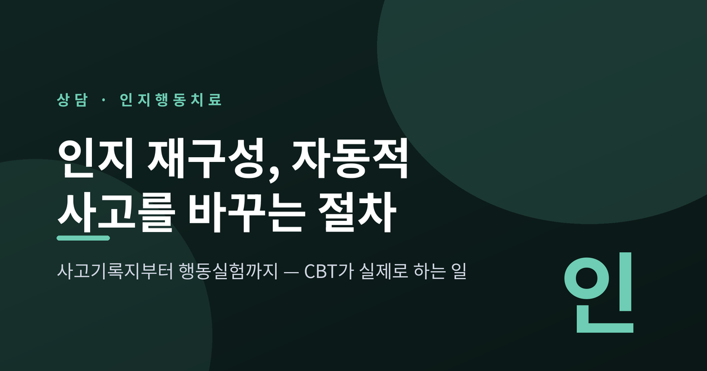
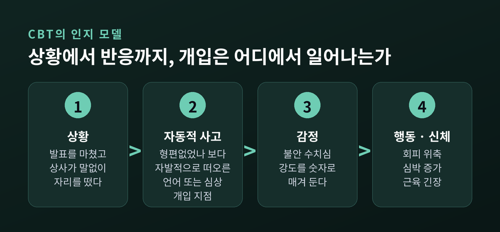
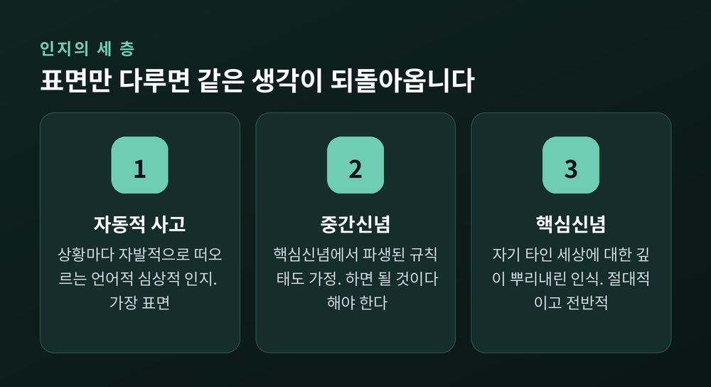
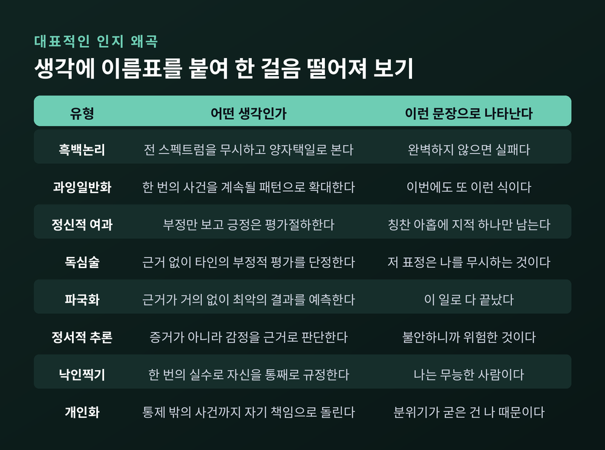
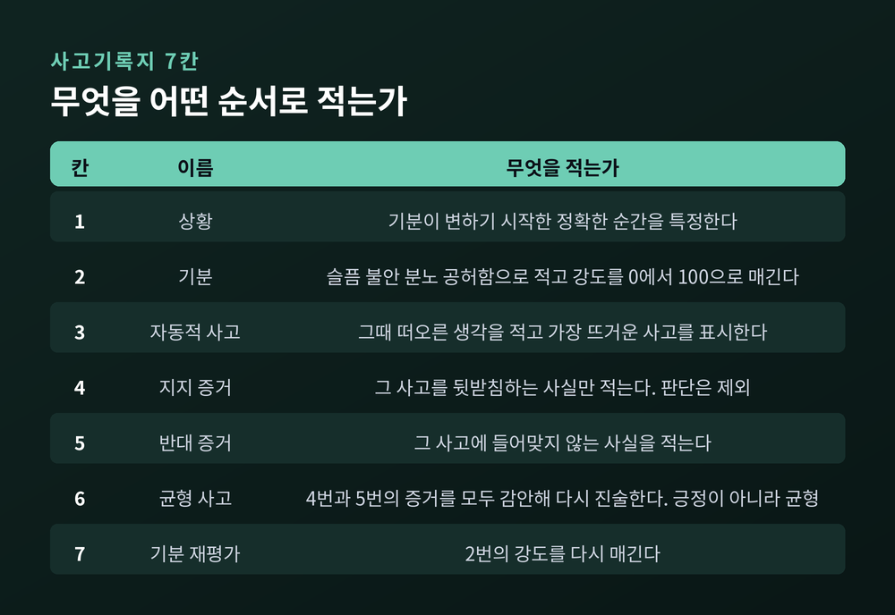
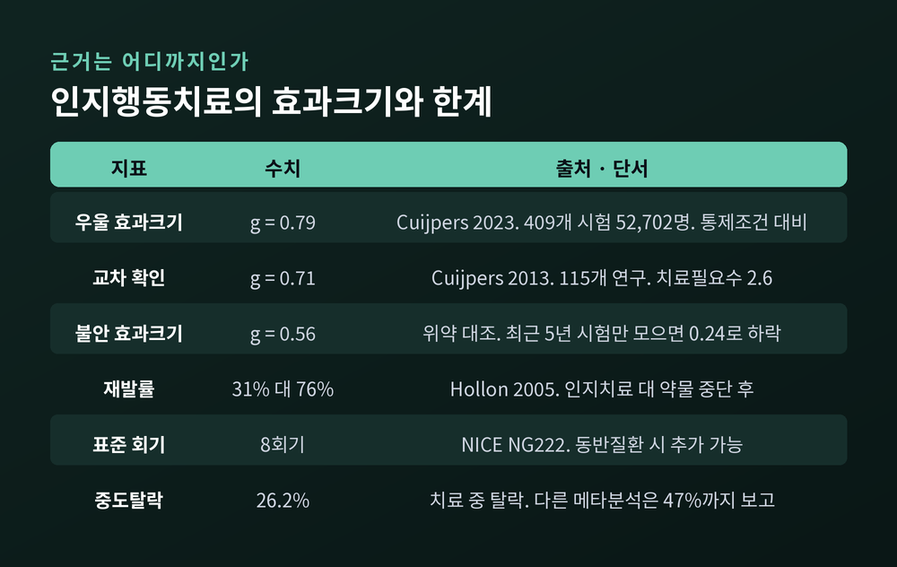

인지삼제와 사고기록지, 소크라테스식 질문에서 행동실험까지

이번 글에서는 인지행동치료의 핵심 기법인 인지 재구성을 절차 중심으로 정리해 보겠습니다. 개념 설명에 그치지 않고, 상담실에서 실제로 무엇을 어떤 순서로 하는지까지 다루겠습니다.
세 줄 요약
인지행동치료는 정신병리에 관한 인지 이론 위에 서 있습니다. 벡 연구소(Beck Institute)가 공개한 인지 모델 자료의 설명은 간결합니다.
사람이 상황을 어떻게 지각하는가, 혹은 그 상황에 대해 어떤 생각이 자발적으로 떠오르는가가 정서적·행동적 반응에, 그리고 종종 생리적 반응에까지 영향을 미친다는 것입니다.
여기서 말하는 자발적으로 떠오르는 생각이 바로 자동적 사고(automatic thoughts)입니다. 원문의 정의는 "자발적으로 발생하는 언어적 또는 심상적 인지"입니다. 말로 떠오르기도 하고, 장면처럼 떠오르기도 한다는 뜻입니다.
괴로운 상태에 있을 때 이 지각은 왜곡되고 제 기능을 하지 못하는 경우가 잦습니다. 그래서 내담자는 자동적 사고를 알아차리고 평가하는 법을 배웁니다. 사고를 현실에 더 가깝게 교정하면 괴로움이 줄고, 더 기능적으로 행동하게 되며, 불안의 경우에는 생리적 각성까지 가라앉습니다.
한 가지 오해를 먼저 걷어내야 하겠습니다. 인지 재구성은 "부정적인 생각은 모두 틀렸다"고 가르치는 작업이 아닙니다. 벡 연구소 자료는 내담자의 사고가 타당할 때(valid) 치료자가 그 사고를 반박하지 않는다고 명시합니다. 그때는 문제 해결을 하거나, 내담자가 내린 결론을 함께 평가하거나, 어려움을 수용하도록 함께 작업합니다.
바꿀 대상은 '부정적인 생각'이 아니라 '현실과 어긋난 생각'입니다.

아론 벡은 1967년에 우울에서 나타나는 신념 체계의 세 축을 제시했습니다. 흔히 인지삼제(cognitive triad)라고 부릅니다.
벡이 이 세 축을 묘사할 때 쓴 표현이 인상적입니다. 자동적이고, 자발적이며, 통제 불가능해 보이는 부정적 사고.
세 축은 각자 따로 작동하지 않습니다. 서로를 강화하는 악순환을 이룹니다. 자기를 부정적으로 보면 세상이 더 적대적으로 읽히고, 그러면 미래는 더 어둡게 보입니다. 그래서 우울은 스스로를 유지하는 힘을 갖습니다.
인지 모델은 마음을 세 층으로 나눕니다. 이 구분을 모르면 인지 재구성이 겉돌기 쉽습니다.
| 층위 | 정의 | 특징 |
|---|---|---|
| 자동적 사고 | 상황에 반응해 자발적으로 떠오르는 언어적·심상적 인지 | 가장 표면. 상황마다 달라짐 |
| 중간신념 | 핵심신념에서 파생된 규칙·태도·가정 | "만약 ~하면 ~할 것이다", "~해야 한다" 형태 |
| 핵심신념 | 자기·타인·세상에 대한 깊이 뿌리내린 인식 | 가장 깊은 층. 절대적이고 전반적 |
표면만 다루면 그때그때의 기분은 나아지지만 같은 종류의 사고가 계속 돌아옵니다. 그래서 여러 상황에 걸쳐 자동적 사고의 '의미'를 확인해 나갑니다. 벡 연구소는 이 과정이 핵심신념에 관한 가설로 이어진다고 설명합니다.
층을 내려가는 대표 기법이 하향 화살표(downward arrow)입니다. 방법은 단순합니다. 내담자가 한 말을 액면 그대로 받아들이고, 그 함의를 묻습니다.
"그게 사실이라면, 그것은 당신에게 어떤 의미입니까?"
가상의 예시로 그려 보겠습니다. 발표를 마친 뒤 상사가 아무 말 없이 자리를 떴다고 해 봅니다.
마지막 문장은 더 이상 그날의 발표에 관한 진술이 아닙니다. 핵심신념의 언어입니다.

인지 왜곡은 벡과 동료들이 1979년에 처음 목록화했고, 데이비드 번스가 1980년에 열 가지 흔한 사고 오류로 확장했습니다.
자주 언급되는 유형은 다음과 같습니다.
| 유형 | 어떤 생각인가 |
|---|---|
| 흑백논리 | 가능한 평가의 전 스펙트럼을 무시하고 양자택일로만 봅니다 |
| 과잉일반화 | 한 번의 부정적 사건을 앞으로도 계속될 패턴으로 확대합니다 |
| 정신적 여과 | 부정적 정보에만 초점을 맞추고 긍정적 정보는 평가절하합니다 |
| 독심술 | 근거 없이 타인이 나를 부정적으로 본다고 단정합니다 |
| 파국화 | 근거가 거의 없는 상태에서 최악의 결과를 예측합니다 |
| 정서적 추론 | 객관적 증거가 아니라 감정을 근거로 사실을 판단합니다 |
| 낙인찍기 | 한 번의 실수 뒤에 자기 자신을 통째로 규정합니다 |
| 개인화 | 통제 밖의 사건까지 자기 책임으로 돌립니다 |
한 가지 덧붙이겠습니다. 자료마다 이 목록을 열 개로도, 열세 개로도, 열다섯 개로도 제시합니다. 확정된 공식 목록은 없습니다. 유형 이름을 외우는 것이 목적이 아니라, 자기 생각에 이름표를 붙여 한 걸음 떨어져 보는 것이 목적이기 때문입니다.

인지 재구성의 실무 도구가 사고기록지(thought record)입니다.
일곱 칸 사고기록지는 크리스틴 패데스키 박사가 1970년대 후반에 개발했고, 『Mind Over Mood』 초판에 실렸습니다. 증거 칸과 대안적·균형 잡힌 사고 칸을 함께 넣은 최초의 사고기록지였습니다.
칸은 이렇게 구성됩니다.
『Mind Over Mood』 2판 체계에서는 1번부터 5번까지를 다섯 칸 단계로 먼저 익히고, 6·7번을 나중에 배우도록 나눠 두었습니다. 처음부터 일곱 칸을 다 채우려 하면 대개 4번과 5번이 부실해집니다.
작성 과정에서 가장 자주 어긋나는 지점을 두 가지만 짚겠습니다.
첫째, 4번과 5번에는 해석이 아니라 사실만 적습니다. "내가 봐도 별로였다"는 사실이 아니라 판단입니다. "질문이 두 개 나왔고, 회의는 예정 시간에 끝났다"가 사실입니다.
둘째, 6번은 긍정적 사고가 아니라 균형 잡힌 사고입니다. "완벽했다"가 아니라 "준비가 부족한 부분이 있었지만, 상사가 말없이 나간 이유는 확인된 바 없다" 쪽입니다. 증거를 모두 감안한 진술이어야 7번의 기분 강도가 실제로 내려갑니다.

상담자가 "그건 왜곡된 생각입니다"라고 알려 주면 될 것 같지만, 실제로는 잘 작동하지 않습니다. 그래서 인지행동치료는 소크라테스식 질문을 씁니다.
패데스키는 1993년 논문에서 이 질문을 네 단계로 정리했습니다. 논문 제목 자체가 요지를 담고 있습니다. "마음을 바꾸는 것인가, 발견을 안내하는 것인가."
원칙도 분명합니다. 질문은 내담자의 지식 범위 안에 있어야 하고, 대체로 구체적인 것에서 추상적인 것으로 이동합니다.
예전에는 인지치료를 '생각을 논리적으로 반박하는 치료'로 소개하는 자료가 많았습니다. 지금은 '내담자가 스스로 다른 정보를 발견하도록 안내하는 치료'라는 서술이 더 정확합니다.
머리로는 납득했는데 마음이 따라오지 않는 순간이 있습니다. 이 지점을 다루는 것이 행동실험(behavioral experiment)입니다.
행동실험은 식별된 신념의 타당성을 검증하기 위해 계획된 경험적 활동입니다. 치료자와 내담자가 함께 예측을 세우고, 실제로 해 보고, 결과와 그 함의를 기록해 검토합니다. 벡 연구소도 예측 형태의 인지를 검증하기 위해 회기 사이에 수행할 행동실험을 설계하도록 돕는다고 기술합니다.
베넷-레비는 2003년 연구에서 흥미로운 가설을 냈습니다. 사고기록지와 행동실험이 서로 다른 인지 하위체계에 작용한다는 것입니다.
결과도 이 가설과 맞았습니다. 두 기법은 자각 수준을 동등하게 높였지만, 행동실험 쪽이 인지적·행동적 변화를 유의하게 더 크게 만든 것으로 평정되었습니다. 경험적 요소가 없는 순수한 언어 기법보다 변화 폭이 컸다는 뜻입니다.
다만 한쪽 손을 들어 주기에는 이릅니다. 맥마너스와 동료들이 2012년에 비임상 표본 91명을 세 조건에 무선 배정한 연구에서는, 사고기록지와 행동실험 모두 통제 조건에 비해 신념·불안·행동·증상 척도에서 이득을 보였습니다. 우열이 뚜렷하게 갈리지 않았습니다.
정리하자면 이렇습니다. 행동실험이 사고기록지를 대체하는 것이 아니라, 두 기법이 서로 다른 경로로 작동합니다.
수치를 보겠습니다.
2023년 『World Psychiatry』에 실린 메타분석은 409개 임상시험, 52,702명을 다뤘습니다. 특정 심리치료 유형에 대해서는 사상 최대 규모입니다.
앞선 2013년 메타분석(115개 연구)에서도 g = 0.71, 치료필요수 2.6이 보고되었습니다. 서로 다른 두 메타분석이 '중간에서 큰 효과'라는 결론에서 만납니다.
재발 쪽 숫자가 특히 눈에 띕니다. 2005년 홀런 등의 연구에서 항우울제에 반응한 환자 중 약물 중단 후 76%가 재발한 반면, 인지치료를 받은 환자는 31%가 재발했습니다.
여기까지가 밝은 쪽입니다. 어두운 쪽도 함께 보겠습니다.
치료 지침에서의 위치도 짚어 두겠습니다. 영국 NICE 가이드라인(NG222, 2022년)은 성인 우울에 대한 개인 인지행동치료를 통상 8회기로 안내합니다. 동반질환이나 복합적 사회적 요구가 있으면 회기를 더할 수 있습니다. 같은 문서는 이 치료가 "부정적 사고나 바꾸고 싶은 행동 패턴을 알아차릴 수 있는 사람"에게 도움이 될 수 있고, 과제를 완수할 의지가 필요하다고 적어 두었습니다.
바꿔 말하면, 모두에게 맞는 방법은 아니라는 뜻입니다.

인지 재구성이 다루는 것은 '현실과 어긋난 해석'입니다. 현실 자체가 아닙니다.
경제적 곤란, 관계에서의 폭력, 감당하기 어려운 노동 조건. 이런 상황에서 드는 괴로운 생각의 상당 부분은 왜곡이 아니라 정확한 인식입니다. 그것을 사고 오류로 처리하는 것은 인지 재구성의 오용입니다.
벡 연구소의 설명이 이 지점을 정확히 짚습니다. 사고가 타당할 때 치료자는 반박하지 않고 문제 해결로 방향을 돌립니다.
또 한 가지. 사고기록지를 혼자 채우다 보면 4번과 5번 칸이 자기비난의 목록으로 변하는 일이 종종 있습니다. 증거를 저울질하는 작업이 자기 검열로 바뀌는 순간, 이 도구는 도움이 되지 않습니다.
정리하면 이렇습니다.
인지 재구성은 생각을 밝게 칠하는 기술이 아닙니다. 떠오른 생각을 잠시 붙잡아 두고, 사실과 대조해 보고, 그래도 남는 것을 다시 진술하는 절차입니다. 자동적 사고를 포착하고, 왜곡의 이름을 붙이고, 증거를 양쪽으로 모으고, 질문으로 시야를 넓히고, 마지막에는 실제로 해 봅니다.
"생각을 바꾸는 것이 아니라, 생각을 검증하는 것입니다."
다만 이 글은 정보를 정리한 것이지 진단이나 치료를 대신하지 않습니다. 기분의 저하나 불안이 2주 이상 이어지거나, 일상과 관계에 지장이 생기거나, 혼자 사고기록지를 붙들수록 더 힘들어진다면 전문 상담사나 정신건강의학과 전문의와 상담하시기를 권합니다. 혼자 감당해야 할 몫으로 남겨 두지 않으셨으면 합니다.
도구는 결국 도구입니다. 그 도구를 함께 들어 줄 사람이 있을 때, 인지 재구성은 비로소 제 힘을 냅니다.